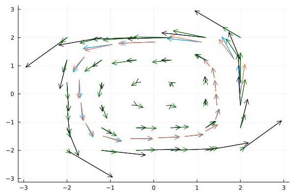

Spiral ODE

You are seeing the HTML output generated by Documenter.jl and Literate.jl from the Julia source file. The corresponding notebook can be viewed in nbviewer.
Setup
Load necessary packages
using ApproximateGPs
using Plots
using LinearAlgebra
using DifferentialEquations
using InducingPoints
using GPDiffEq
using Optimization, OptimizationOptimJLFirst we define an ODE and generate some data points from it.
u0 = [2.0; 0.0]
datasize = 19
tspan = (0.0, 3.0)
datatspan = (0.0, 1.5)
datatsteps = range(datatspan[1], datatspan[2]; length=datasize)
function trueODEfunc(u, p, t)
du = similar(u)
true_A = [-0.1 2.0; -2.0 -0.1]
return du .= ((u .^ 3)'true_A)'
end
prob_trueode = ODEProblem(trueODEfunc, u0, tspan)
sol = solve(prob_trueode, Tsit5())
ode_data = Array(sol(datatsteps))
traj = sol(datatsteps);
p = plot(sol)
scatter!(p, datatsteps, ode_data'; markersize=4, color=:black, label=["data" ""])Gradient data
For this example we get gradient observations from our trajectory data via finite differences
First, we set all necessary variables, which includes the Multi-Output Kernel and the inputs and outputs. See also the KernelFunctions.jl Documentation on Multiple Outputs.
scaker = with_lengthscale(SqExponentialKernel(), 1.0)
moker = IndependentMOKernel(scaker)
x, y = prepare_isotopic_multi_output_data(collect(datatsteps), ColVecs(ode_data))
σ_n = 1e-3and build a finite GP from them
g = GP(moker)
gt = g(x, σ_n)
gt_post = posterior(gt, y)Now we use the following convenience functions to a loglikelihood loss function and a function to rebuild the gp with the optimal parameters. Note that we use optimize over the logarithm of the parameters, to ensure their positivity. For more details see this KernelFunctions.jl example
loss, buildgppost = gp_negloglikelihood(gt, x, y)
p0 = log.([1.0])
unfl(x) = exp.(x)
#optp = gp_train(loss ∘ unfl, p0; show_trace=true, show_every=15)unfl (generic function with 1 method)Optimizing:
adtype = Optimization.AutoZygote()
optf = Optimization.OptimizationFunction((x, p) -> (loss ∘ unfl)(x), adtype)
optprob = Optimization.OptimizationProblem(optf, p0)
optp = Optimization.solve(optprob, NelderMead(); maxiters=300)
optparams = unfl(optp)1-element Vector{Float64}:
5.305029832442984Now we can build a FiniteGP with the optimized parameters,
optpost = buildgppost(optparams)which fits pretty well
t_plot = range(datatspan...; length=100)
t_plot_mo = MOInput(t_plot, 2)
opt_pred_mean = mean(optpost, t_plot_mo)
opt_pred_mean = reshape(opt_pred_mean, :, 2)
pred_mean = mean(gt_post, t_plot_mo)
pred_mean = reshape(pred_mean, :, 2)
# pred_cov = diag(cov(optpost, t_plot_mo))
# pred_cov = reshape(pred_cov, :, 2)
# plot!(t_plot, pred_mean; ribbons = pred_cov)
plot(sol; label=["ode" ""], color=[:skyblue :navy], linewidth=3.5)
plot!(
t_plot,
pred_mean;
label=["gp" ""],
color=[:limegreen :darkgreen],
linewidth=2.5,
linestyle=:dashdot,
)
plot!(
t_plot,
opt_pred_mean;
label=["opt. gp" ""],
color=[:tomato :firebrick],
linewidth=2.5,
linestyle=:dash,
)GPs are closed under linear operators, which means that we can very easily obtain derivative information:
deriv_post = differentiate(optpost)
du_pred_mean = mean(deriv_post, x)
du_pred_mean = reshape_isotopic_multi_output(du_pred_mean, deriv_post)
du = trueODEfunc.(eachcol(ode_data), 0, 0)
sf = maximum(norm.(du))
quiver(
ode_data[1, :],
ode_data[2, :];
quiver=(getindex.(du, 1) / sf, getindex.(du, 2) / sf),
label="true",
)
quiver!(
ode_data[1, :],
ode_data[2, :];
quiver=(getindex.(du_pred_mean, 1) / sf, getindex.(du_pred_mean, 2) / sf),
label="predicted data",
)This leaves us with u and udot pairs as in the input and output:
u = ColVecs(ode_data)
udot = du_pred_mean19-element KernelFunctions.ColVecs{Float64, Matrix{Float64}, SubArray{Float64, 1, Matrix{Float64}, Tuple{Base.Slice{Base.OneTo{Int64}}, Int64}, true}}:
[1.634871678760745, 16.81864165581577]
[-5.566949485624291, 11.184418243312292]
[-11.59191995377727, 3.2766656267767877]
[-13.422253915648996, -0.7755273361662194]
[-10.032201549055078, -3.3034857917730562]
[-4.117179968156824, -7.302470297546809]
[-0.2686394953087285, -10.384576422883722]
[0.9285820639712224, -10.021212096059081]
[2.9137235738380776, -6.948565101148634]
[6.272975144318117, -2.9816607282225336]
[8.126320496380389, -0.17652734532752828]
[7.776182541715882, 0.5459129358742617]
[6.535754242119172, 1.2008000796698866]
[4.344121545992613, 3.519626805535141]
[1.427299668039095, 5.811190928238238]
[-0.29126002410905283, 6.267664513186782]
[-0.324149710502877, 5.85500415756832]
[-0.6047558145099421, 5.47369601024914]
[-2.1931971623354216, 3.9377258709162706]Building a model
Now we build a model for the the ODE.
scaker = with_lengthscale(SqExponentialKernel(), ones(2))
moker = IndependentMOKernel(scaker)
u_mo, y = prepare_isotopic_multi_output_data(u, udot)
σ_n = 1e-6and build a posterior GP
gpfun = GP(moker)
fin_gpfun = gpfun(u_mo, σ_n)
post_gpfun = posterior(fin_gpfun, y)AbstractGPs.PosteriorGP{AbstractGPs.GP{AbstractGPs.ZeroMean{Float64}, KernelFunctions.IndependentMOKernel{KernelFunctions.TransformedKernel{KernelFunctions.SqExponentialKernel{Distances.Euclidean}, KernelFunctions.ARDTransform{Vector{Float64}}}}}, NamedTuple{(:α, :C, :x, :δ), Tuple{Vector{Float64}, LinearAlgebra.Cholesky{Float64, Matrix{Float64}}, KernelFunctions.MOInputIsotopicByFeatures{SubArray{Float64, 1, Matrix{Float64}, Tuple{Base.Slice{Base.OneTo{Int64}}, Int64}, true}, KernelFunctions.ColVecs{Float64, Matrix{Float64}, SubArray{Float64, 1, Matrix{Float64}, Tuple{Base.Slice{Base.OneTo{Int64}}, Int64}, true}}, Int64}, Vector{Float64}}}}(AbstractGPs.GP{AbstractGPs.ZeroMean{Float64}, KernelFunctions.IndependentMOKernel{KernelFunctions.TransformedKernel{KernelFunctions.SqExponentialKernel{Distances.Euclidean}, KernelFunctions.ARDTransform{Vector{Float64}}}}}(AbstractGPs.ZeroMean{Float64}(), Independent Multi-Output Kernel
Squared Exponential Kernel (metric = Distances.Euclidean(0.0))
- ARD Transform (dims: 2)), (α = [26.886130383084197, 37.76662367865204, -13.900917459312923, 5.519569746858154, -38.23138186764972, 10.264897691403302, -7.946615839921698, -0.7449425687000086, -5.481741835418812, 2.4142681193747624, -0.5943730011358367, -3.798716997070313, 3.4867225770013217, -6.784247802148365, -0.050284026880610795, 1.9667283309489263, -7.285093433206288, -12.904740411490325, 8.571615663560777, 11.281805331225472, 6.540184274957445, -11.925606732939867, -9.527658755380351, 24.174106898490724, 16.895238212325804, -35.33015271862429, -15.595880386542914, 42.604451040185346, 69.04115443191559, -46.46823157191511, -182.90106514389944, 71.77321385643, 251.37303497605754, -137.98313545453422, -283.8467694186488, 111.90574016332612, 174.87054623048755, -56.843054018006185], C = LinearAlgebra.Cholesky{Float64, Matrix{Float64}}([1.000000499999875 0.0 0.4619835442836472 0.0 0.12270169800141326 0.0 0.026219727003673268 0.0 0.0027022961653387877 0.0 0.0006429550650639587 0.0 0.0008874231473715965 0.0 0.0010991116681377438 0.0 0.0009882975233571549 0.0 0.002168079644552367 0.0 0.01165265156481762 0.0 0.0505936345887779 0.0 0.14143244266890873 0.0 0.30473432981610116 0.0 0.5612266680267186 0.0 0.7965581028214214 0.0 0.8465243684498069 0.0 0.7056613804881385 0.0 0.47629343845451166 0.0; 0.0 1.000000499999875 0.0 0.4619835442836472 0.0 0.12270169800141326 0.0 0.026219727003673268 0.0 0.0027022961653387877 0.0 0.0006429550650639587 0.0 0.0008874231473715965 0.0 0.0010991116681377438 0.0 0.0009882975233571549 0.0 0.002168079644552367 0.0 0.01165265156481762 0.0 0.0505936345887779 0.0 0.14143244266890873 0.0 0.30473432981610116 0.0 0.5612266680267186 0.0 0.7965581028214214 0.0 0.8465243684498069 0.0 0.7056613804881385 0.0 0.47629343845451166; 0.4619837752753616 0.0 0.8868890600357631 0.0 0.6412856771283082 0.0 0.16313553918812337 0.0 0.0174978205459825 0.0 0.0025176576743815553 0.0 0.0010056103442784461 0.0 8.794052474707736e-5 0.0 -0.00027734372948453467 0.0 -0.0008457190353612595 0.0 -0.004824251401688377 0.0 -0.021263235235131638 0.0 -0.05982970549786795 0.0 -0.12363656963666962 0.0 -0.1888240139631541 0.0 -0.13994491323381011 0.0 0.10408983494564797 0.0 0.452569841096094 0.0 0.6848495736929736 0.0; 0.0 0.4619837752753616 0.0 0.8868890600357631 0.0 0.6412856771283082 0.0 0.16313553918812337 0.0 0.0174978205459825 0.0 0.0025176576743815553 0.0 0.0010056103442784461 0.0 8.794052474707736e-5 0.0 -0.00027734372948453467 0.0 -0.0008457190353612595 0.0 -0.004824251401688377 0.0 -0.021263235235131638 0.0 -0.05982970549786795 0.0 -0.12363656963666962 0.0 -0.1888240139631541 0.0 -0.13994491323381011 0.0 0.10408983494564797 0.0 0.452569841096094 0.0 0.6848495736929736; 0.12270175935224692 0.0 0.6254354167350377 0.0 0.7574285270688299 0.0 0.6028306129500021 0.0 0.14417228932837373 0.0 0.027729469892217033 0.0 0.009278406667924519 0.0 0.002489873676222169 0.0 0.0006589640959443561 0.0 0.0007583454813383471 0.0 0.0032076391607316007 0.0 0.012382607734408609 0.0 0.03231567836212299 0.0 0.06433877955925361 0.0 0.09764456652311944 0.0 0.09101488883025702 0.0 0.0522703083917848 0.0 0.07329075291703019 0.0 0.24653008699685744 0.0; 0.0 0.12270175935224692 0.0 0.6254354167350377 0.0 0.7574285270688299 0.0 0.6028306129500021 0.0 0.14417228932837373 0.0 0.027729469892217033 0.0 0.009278406667924519 0.0 0.002489873676222169 0.0 0.0006589640959443561 0.0 0.0007583454813383471 0.0 0.0032076391607316007 0.0 0.012382607734408609 0.0 0.03231567836212299 0.0 0.06433877955925361 0.0 0.09764456652311944 0.0 0.09101488883025702 0.0 0.0522703083917848 0.0 0.07329075291703019 0.0 0.24653008699685744; 0.026219740113533493 0.0 0.15679620742028874 0.0 0.5644347929751515 0.0 0.7805738746973139 0.0 0.6706417458875343 0.0 0.27226616794212577 0.0 0.1060992023262936 0.0 0.02703521768120184 0.0 0.005008053716886214 0.0 0.001923606509542341 0.0 0.0012617528842981522 0.0 -0.002830410099484887 0.0 -0.01348625271519409 0.0 -0.02969533020127924 0.0 -0.04384152757894732 0.0 -0.03013185621219941 0.0 0.01508750352190223 0.0 0.05069860692868969 0.0 0.052256100522272704 0.0; 0.0 0.026219740113533493 0.0 0.15679620742028874 0.0 0.5644347929751515 0.0 0.7805738746973139 0.0 0.6706417458875343 0.0 0.27226616794212577 0.0 0.1060992023262936 0.0 0.02703521768120184 0.0 0.005008053716886214 0.0 0.001923606509542341 0.0 0.0012617528842981522 0.0 -0.002830410099484887 0.0 -0.01348625271519409 0.0 -0.02969533020127924 0.0 -0.04384152757894732 0.0 -0.03013185621219941 0.0 0.01508750352190223 0.0 0.05069860692868969 0.0 0.052256100522272704; 0.0027022975164865326 0.0 0.0167670419768682 0.0 0.12075288277522109 0.0 0.6133222655245567 0.0 0.7274211459218868 0.0 0.754074097038223 0.0 0.36765830081328943 0.0 0.09803857480041686 0.0 0.01762872078201642 0.0 0.004947435616389614 0.0 0.0030595468201286545 0.0 0.0037071013707952664 0.0 0.008598217687726587 0.0 0.017665071036887126 0.0 0.025830416890869193 0.0 0.017521661866244532 0.0 -0.009664596021737498 0.0 -0.031862005607334556 0.0 -0.033151194220804356 0.0; 0.0 0.0027022975164865326 0.0 0.0167670419768682 0.0 0.12075288277522109 0.0 0.6133222655245567 0.0 0.7274211459218868 0.0 0.754074097038223 0.0 0.36765830081328943 0.0 0.09803857480041686 0.0 0.01762872078201642 0.0 0.004947435616389614 0.0 0.0030595468201286545 0.0 0.0037071013707952664 0.0 0.008598217687726587 0.0 0.017665071036887126 0.0 0.025830416890869193 0.0 0.017521661866244532 0.0 -0.009664596021737498 0.0 -0.031862005607334556 0.0 -0.033151194220804356; 0.0006429553865414109 0.0 0.0025299177080974535 0.0 0.022696521021576425 0.0 0.2296676085399615 0.0 0.7351661141257847 0.0 0.597050010031165 0.0 0.6830059353627408 0.0 0.30712657184553377 0.0 0.0791151357005577 0.0 0.022752773315474685 0.0 0.009798048060077696 0.0 0.0023831987280514833 0.0 -0.003962470453132525 0.0 -0.010517637004629375 0.0 -0.015522740241931125 0.0 -0.009256672586788616 0.0 0.009633357991115345 0.0 0.025223334307791417 0.0 0.02743707744948257 0.0; 0.0 0.0006429553865414109 0.0 0.0025299177080974535 0.0 0.022696521021576425 0.0 0.2296676085399615 0.0 0.7351661141257847 0.0 0.597050010031165 0.0 0.6830059353627408 0.0 0.30712657184553377 0.0 0.0791151357005577 0.0 0.022752773315474685 0.0 0.009798048060077696 0.0 0.0023831987280514833 0.0 -0.003962470453132525 0.0 -0.010517637004629375 0.0 -0.015522740241931125 0.0 -0.009256672586788616 0.0 0.009633357991115345 0.0 0.025223334307791417 0.0 0.02743707744948257; 0.0008874235910830593 0.0 0.0013018397039014306 0.0 0.007781501733617765 0.0 0.08859889181934144 0.0 0.3399546599708229 0.0 0.7141779126573086 0.0 0.6220822596455987 0.0 0.7517365955839769 0.0 0.3833399541080135 0.0 0.16238428170472713 0.0 0.07878971011383192 0.0 0.032046527372488115 0.0 0.012162406363208847 0.0 0.009404238185235706 0.0 0.011596583471019469 0.0 0.009737748188529996 0.0 0.0008931592718286308 0.0 -0.0077934161508176536 0.0 -0.009335095414431316 0.0; 0.0 0.0008874235910830593 0.0 0.0013018397039014306 0.0 0.007781501733617765 0.0 0.08859889181934144 0.0 0.3399546599708229 0.0 0.7141779126573086 0.0 0.6220822596455987 0.0 0.7517365955839769 0.0 0.3833399541080135 0.0 0.16238428170472713 0.0 0.07878971011383192 0.0 0.032046527372488115 0.0 0.012162406363208847 0.0 0.009404238185235706 0.0 0.011596583471019469 0.0 0.009737748188529996 0.0 0.0008931592718286308 0.0 -0.0077934161508176536 0.0 -0.009335095414431316; 0.0010991122176934405 0.0 0.0005857649933417739 0.0 0.0020771592181015254 0.0 0.022647121325912362 0.0 0.08980975769284483 0.0 0.2647290186469852 0.0 0.7163485482448088 0.0 0.5746446548357839 0.0 0.7784139026292163 0.0 0.5406998096830204 0.0 0.2966352083806737 0.0 0.11851108917739783 0.0 0.03375375738995077 0.0 0.007722781746867568 0.0 0.001139146880498224 0.0 0.001562631138291067 0.0 0.005393518860009081 0.0 0.008277991990139113 0.0 0.007726760803330457 0.0; 0.0 0.0010991122176934405 0.0 0.0005857649933417739 0.0 0.0020771592181015254 0.0 0.022647121325912362 0.0 0.08980975769284483 0.0 0.2647290186469852 0.0 0.7163485482448088 0.0 0.5746446548357839 0.0 0.7784139026292163 0.0 0.5406998096830204 0.0 0.2966352083806737 0.0 0.11851108917739783 0.0 0.03375375738995077 0.0 0.007722781746867568 0.0 0.001139146880498224 0.0 0.001562631138291067 0.0 0.005393518860009081 0.0 0.008277991990139113 0.0 0.007726760803330457; 0.0009882980175057931 0.0 0.00021060407309793713 0.0 0.0004425274274691109 0.0 0.004287067896763264 0.0 0.0162749362846795 0.0 0.06191078776300586 0.0 0.29952450043249684 0.0 0.761646811937385 0.0 0.4904352462837894 0.0 0.714855773003879 0.0 0.4965983036237402 0.0 0.2200380371117302 0.0 0.07130053588131208 0.0 0.023595383073929284 0.0 0.012512263440690157 0.0 0.0062966036663150045 0.0 -0.000741405892801026 0.0 -0.005124095232936627 0.0 -0.005343511332393596 0.0; 0.0 0.0009882980175057931 0.0 0.00021060407309793713 0.0 0.0004425274274691109 0.0 0.004287067896763264 0.0 0.0162749362846795 0.0 0.06191078776300586 0.0 0.29952450043249684 0.0 0.761646811937385 0.0 0.4904352462837894 0.0 0.714855773003879 0.0 0.4965983036237402 0.0 0.2200380371117302 0.0 0.07130053588131208 0.0 0.023595383073929284 0.0 0.012512263440690157 0.0 0.0062966036663150045 0.0 -0.000741405892801026 0.0 -0.005124095232936627 0.0 -0.005343511332393596; 0.0021680807285919183 0.0 0.0002515581581536329 0.0 0.00029807205047633814 0.0 0.0018775504834565662 0.0 0.004989313070951918 0.0 0.017859302819268195 0.0 0.1185878287806156 0.0 0.4403096853090712 0.0 0.8356269154126085 0.0 0.41195318628987876 0.0 0.6900405912210174 0.0 0.5123835837365854 0.0 0.2363649242987305 0.0 0.08881079447929113 0.0 0.04013319662813803 0.0 0.02163096004706457 0.0 0.012048244505522528 0.0 0.007441419776245605 0.0 0.005325792640828593 0.0; 0.0 0.0021680807285919183 0.0 0.0002515581581536329 0.0 0.00029807205047633814 0.0 0.0018775504834565662 0.0 0.004989313070951918 0.0 0.017859302819268195 0.0 0.1185878287806156 0.0 0.4403096853090712 0.0 0.8356269154126085 0.0 0.41195318628987876 0.0 0.6900405912210174 0.0 0.5123835837365854 0.0 0.2363649242987305 0.0 0.08881079447929113 0.0 0.04013319662813803 0.0 0.02163096004706457 0.0 0.012048244505522528 0.0 0.007441419776245605 0.0 0.005325792640828593; 0.011652657391141946 0.0 0.001104757479197215 0.0 0.0007656342113342606 0.0 0.002437076908498332 0.0 0.003481290922590202 0.0 0.00858487477230071 0.0 0.056999795940332 0.0 0.2330526215996194 0.0 0.5055079221201767 0.0 0.8127176687614678 0.0 0.4275026792928536 0.0 0.7255794827483185 0.0 0.5756991909086419 0.0 0.31854703634007653 0.0 0.17499619945316217 0.0 0.09272630703423551 0.0 0.03724649631392026 0.0 0.009693485642627791 0.0 0.0027016204459879797 0.0; 0.0 0.011652657391141946 0.0 0.001104757479197215 0.0 0.0007656342113342606 0.0 0.002437076908498332 0.0 0.003481290922590202 0.0 0.00858487477230071 0.0 0.056999795940332 0.0 0.2330526215996194 0.0 0.5055079221201767 0.0 0.8127176687614678 0.0 0.4275026792928536 0.0 0.7255794827483185 0.0 0.5756991909086419 0.0 0.31854703634007653 0.0 0.17499619945316217 0.0 0.09272630703423551 0.0 0.03724649631392026 0.0 0.009693485642627791 0.0 0.0027016204459879797; 0.05059365988558887 0.0 0.004515295914510126 0.0 0.0019510570039504016 0.0 0.0031130327741899053 0.0 0.002348320371789613 0.0 0.0037700520664149134 0.0 0.02276436367850531 0.0 0.09329574244216791 0.0 0.21275358486896354 0.0 0.43786047120193283 0.0 0.8114656277590476 0.0 0.37989113955888804 0.0 0.6984895339503134 0.0 0.6279493747163033 0.0 0.41931102383908286 0.0 0.22105134056683606 0.0 0.08205509764745936 0.0 0.02059741476872744 0.0 0.008505550243095024 0.0; 0.0 0.05059365988558887 0.0 0.004515295914510126 0.0 0.0019510570039504016 0.0 0.0031130327741899053 0.0 0.002348320371789613 0.0 0.0037700520664149134 0.0 0.02276436367850531 0.0 0.09329574244216791 0.0 0.21275358486896354 0.0 0.43786047120193283 0.0 0.8114656277590476 0.0 0.37989113955888804 0.0 0.6984895339503134 0.0 0.6279493747163033 0.0 0.41931102383908286 0.0 0.22105134056683606 0.0 0.08205509764745936 0.0 0.02059741476872744 0.0 0.008505550243095024; 0.1414325133851124 0.0 0.012277149869655555 0.0 0.003462884328427997 0.0 0.0029018324282676393 0.0 0.0012044095249183217 0.0 0.0012824504869192585 0.0 0.006955134902866922 0.0 0.028031366031283016 0.0 0.06585323610198347 0.0 0.16887469926541382 0.0 0.45760370858774474 0.0 0.8331423100933446 0.0 0.3058527199940572 0.0 0.5778131703062823 0.0 0.4974704538375777 0.0 0.24258480835630825 0.0 0.049502421724559396 0.0 -0.01762541726068473 0.0 -0.013161468594997682 0.0; 0.0 0.1414325133851124 0.0 0.012277149869655555 0.0 0.003462884328427997 0.0 0.0029018324282676393 0.0 0.0012044095249183217 0.0 0.0012824504869192585 0.0 0.006955134902866922 0.0 0.028031366031283016 0.0 0.06585323610198347 0.0 0.16887469926541382 0.0 0.45760370858774474 0.0 0.8331423100933446 0.0 0.3058527199940572 0.0 0.5778131703062823 0.0 0.4974704538375777 0.0 0.24258480835630825 0.0 0.049502421724559396 0.0 -0.01762541726068473 0.0 -0.013161468594997682; 0.30473448218322796 0.0 0.03113032472223224 0.0 0.0068370854654570086 0.0 0.0034265194479086605 0.0 0.0008709991696882242 0.0 0.0006249196256247071 0.0 0.0027537198403490876 0.0 0.00969041795003705 0.0 0.02089699589581873 0.0 0.05976100303394804 0.0 0.21647931710552093 0.0 0.5405649639989585 0.0 0.8749478923703919 0.0 0.2194428138420806 0.0 0.3805891487726259 0.0 0.25590173068834265 0.0 0.06047971162540529 0.0 -0.02519629118926571 0.0 -0.014431297516303785 0.0; 0.0 0.30473448218322796 0.0 0.03113032472223224 0.0 0.0068370854654570086 0.0 0.0034265194479086605 0.0 0.0008709991696882242 0.0 0.0006249196256247071 0.0 0.0027537198403490876 0.0 0.00969041795003705 0.0 0.02089699589581873 0.0 0.05976100303394804 0.0 0.21647931710552093 0.0 0.5405649639989585 0.0 0.8749478923703919 0.0 0.2194428138420806 0.0 0.3805891487726259 0.0 0.25590173068834265 0.0 0.06047971162540529 0.0 -0.02519629118926571 0.0 -0.014431297516303785; 0.5612269486399825 0.0 0.09181153298552379 0.0 0.021732109675988178 0.0 0.00855288552671813 0.0 0.0016778655143843278 0.0 0.000866712733834204 0.0 0.0026712693615452416 0.0 0.006795214997853418 0.0 0.011147701673635373 0.0 0.02911730093992319 0.0 0.11760559168448552 0.0 0.34389104378431107 0.0 0.6510431833702492 0.0 0.8965648623530087 0.0 0.19061229309901775 0.0 0.33991967537723805 0.0 0.26092798476809653 0.0 0.12534166753689338 0.0 0.0679913821403181 0.0; 0.0 0.5612269486399825 0.0 0.09181153298552379 0.0 0.021732109675988178 0.0 0.00855288552671813 0.0 0.0016778655143843278 0.0 0.000866712733834204 0.0 0.0026712693615452416 0.0 0.006795214997853418 0.0 0.011147701673635373 0.0 0.02911730093992319 0.0 0.11760559168448552 0.0 0.34389104378431107 0.0 0.6510431833702492 0.0 0.8965648623530087 0.0 0.19061229309901775 0.0 0.33991967537723805 0.0 0.26092798476809653 0.0 0.12534166753689338 0.0 0.0679913821403181; 0.7965585011003732 0.0 0.24388112301457784 0.0 0.07693163651720135 0.0 0.029401968587250128 0.0 0.005363576510479016 0.0 0.0021656621673164875 0.0 0.004390963796634047 0.0 0.007368201702285487 0.0 0.00834898252693415 0.0 0.017570764700506045 0.0 0.06909861208140862 0.0 0.20875347529168442 0.0 0.4122795910350318 0.0 0.6340428625505045 0.0 0.8771217165330067 0.0 0.19591358198996106 0.0 0.4053006765108509 0.0 0.40336382870935694 0.0 0.2809622191061039 0.0; 0.0 0.7965585011003732 0.0 0.24388112301457784 0.0 0.07693163651720135 0.0 0.029401968587250128 0.0 0.005363576510479016 0.0 0.0021656621673164875 0.0 0.004390963796634047 0.0 0.007368201702285487 0.0 0.00834898252693415 0.0 0.017570764700506045 0.0 0.06909861208140862 0.0 0.20875347529168442 0.0 0.4122795910350318 0.0 0.6340428625505045 0.0 0.8771217165330067 0.0 0.19591358198996106 0.0 0.4053006765108509 0.0 0.40336382870935694 0.0 0.2809622191061039; 0.8465247917118853 0.0 0.4833964639331413 0.0 0.21021232038828205 0.0 0.08246344232107777 0.0 0.014732913022019794 0.0 0.004827359379597748 0.0 0.0065236466728673965 0.0 0.007259553221483359 0.0 0.005686684635727396 0.0 0.0094819575918538 0.0 0.03515247095694577 0.0 0.10608242512310974 0.0 0.21174844072315316 0.0 0.35410742994908395 0.0 0.598276023493483 0.0 0.8812323043474065 0.0 0.15053405226718505 0.0 0.31490935595161296 0.0 0.3295563281789712 0.0; 0.0 0.8465247917118853 0.0 0.4833964639331413 0.0 0.21021232038828205 0.0 0.08246344232107777 0.0 0.014732913022019794 0.0 0.004827359379597748 0.0 0.0065236466728673965 0.0 0.007259553221483359 0.0 0.005686684635727396 0.0 0.0094819575918538 0.0 0.03515247095694577 0.0 0.10608242512310974 0.0 0.21174844072315316 0.0 0.35410742994908395 0.0 0.598276023493483 0.0 0.8812323043474065 0.0 0.15053405226718505 0.0 0.31490935595161296 0.0 0.3295563281789712; 0.7056617333187406 0.0 0.727383186592251 0.0 0.43232491362478714 0.0 0.17608839135755266 0.0 0.031215893175657875 0.0 0.008462232540611939 0.0 0.007805642592021827 0.0 0.0058898907783707 0.0 0.0032510837786969655 0.0 0.0043294605521709524 0.0 0.015063989711050139 0.0 0.04505972143073156 0.0 0.09019209062421171 0.0 0.1623060894233369 0.0 0.33031986293645493 0.0 0.6195413820218004 0.0 0.8929935496471104 0.0 0.09151412059400232 0.0 0.20516313847977452 0.0; 0.0 0.7056617333187406 0.0 0.727383186592251 0.0 0.43232491362478714 0.0 0.17608839135755266 0.0 0.031215893175657875 0.0 0.008462232540611939 0.0 0.007805642592021827 0.0 0.0058898907783707 0.0 0.0032510837786969655 0.0 0.0043294605521709524 0.0 0.015063989711050139 0.0 0.04505972143073156 0.0 0.09019209062421171 0.0 0.1623060894233369 0.0 0.33031986293645493 0.0 0.6195413820218004 0.0 0.8929935496471104 0.0 0.09151412059400232 0.0 0.20516313847977452; 0.4762936766011714 0.0 0.8274253254947148 0.0 0.6843551569142122 0.0 0.3136172187132535 0.0 0.05974351070319892 0.0 0.014477019448066432 0.0 0.009687280383372318 0.0 0.005209478186059629 0.0 0.0021066683717152566 0.0 0.0022373058013099864 0.0 0.0070032152426523055 0.0 0.019743616896741267 0.0 0.03775327725047467 0.0 0.06965472311410592 0.0 0.16349849133866065 0.0 0.37698623746985954 0.0 0.6693393737064282 0.0 0.9139186967162738 0.0 0.06196987944877804 0.0; 0.0 0.4762936766011714 0.0 0.8274253254947148 0.0 0.6843551569142122 0.0 0.3136172187132535 0.0 0.05974351070319892 0.0 0.014477019448066432 0.0 0.009687280383372318 0.0 0.005209478186059629 0.0 0.0021066683717152566 0.0 0.0022373058013099864 0.0 0.0070032152426523055 0.0 0.019743616896741267 0.0 0.03775327725047467 0.0 0.06965472311410592 0.0 0.16349849133866065 0.0 0.37698623746985954 0.0 0.6693393737064282 0.0 0.9139186967162738 0.0 0.06196987944877804], 'U', 0), x = Tuple{SubArray{Float64, 1, Matrix{Float64}, Tuple{Base.Slice{Base.OneTo{Int64}}, Int64}, true}, Int64}[([2.0, 0.0], 1), ([2.0, 0.0], 2), ([1.8540082032383924, 1.2341545321456486], 1), ([1.8540082032383924, 1.2341545321456486], 2), ([1.0968335224363548, 1.8385558167331164], 1), ([1.0968335224363548, 1.8385558167331164], 2), ([0.02732321120174061, 1.841475417119951], 1), ([0.02732321120174061, 1.841475417119951], 2), ([-0.9576760631528309, 1.7548385045374404], 1), ([-0.9576760631528309, 1.7548385045374404], 2), ([-1.6033711154446175, 1.3094224082536117], 1), ([-1.6033711154446175, 1.3094224082536117], 2), ([-1.715872629998389, 0.496655682922846], 1), ([-1.715872629998389, 0.496655682922846], 2), ([-1.6775781683557398, -0.31925509448967415], 1), ([-1.6775781683557398, -0.31925509448967415], 2), ([-1.5690755776160907, -1.0491673166662385], 1), ([-1.5690755776160907, -1.0491673166662385], 2), ([-1.1678000848335313, -1.4942786024881338], 1), ([-1.1678000848335313, -1.4942786024881338], 2), ([-0.5298628588298211, -1.5824777916258712], 1), ([-0.5298628588298211, -1.5824777916258712], 2), ([0.11595044911926827, -1.5550611911793628], 1), ([0.11595044911926827, -1.5550611911793628], 2), ([0.7182148654337268, -1.5062842011252175], 1), ([0.7182148654337268, -1.5062842011252175], 2), ([1.1993775429165743, -1.3174340760352319], 1), ([1.1993775429165743, -1.3174340760352319], 2), ([1.4264889494226716, -0.9090351474695393], 1), ([1.4264889494226716, -0.9090351474695393], 2), ([1.455311558337542, -0.39777369289497305], 1), ([1.455311558337542, -0.39777369289497305], 2), ([1.4322861125730242, 0.1045587063270885], 1), ([1.4322861125730242, 0.1045587063270885], 2), ([1.3984518014497875, 0.5791185888849205], 1), ([1.3984518014497875, 0.5791185888849205], 2), ([1.2893454342143849, 0.9891467953863277], 1), ([1.2893454342143849, 0.9891467953863277], 2)], δ = [1.634871678760745, 16.81864165581577, -5.566949485624291, 11.184418243312292, -11.59191995377727, 3.2766656267767877, -13.422253915648996, -0.7755273361662194, -10.032201549055078, -3.3034857917730562, -4.117179968156824, -7.302470297546809, -0.2686394953087285, -10.384576422883722, 0.9285820639712224, -10.021212096059081, 2.9137235738380776, -6.948565101148634, 6.272975144318117, -2.9816607282225336, 8.126320496380389, -0.17652734532752828, 7.776182541715882, 0.5459129358742617, 6.535754242119172, 1.2008000796698866, 4.344121545992613, 3.519626805535141, 1.427299668039095, 5.811190928238238, -0.29126002410905283, 6.267664513186782, -0.324149710502877, 5.85500415756832, -0.6047558145099421, 5.47369601024914, -2.1931971623354216, 3.9377258709162706]))and optimize
loss, buildgppost = gp_negloglikelihood(fin_gpfun, u_mo, y)
p0 = log.(ones(2))
unfl(x) = exp.(x)
optf = Optimization.OptimizationFunction((x, p) -> (loss ∘ unfl)(x), adtype)
optprob = Optimization.OptimizationProblem(optf, p0)
optp = Optimization.solve(optprob, NelderMead(); maxiters=300)
optparams = unfl(optp)2-element Vector{Float64}:
1.5879628214708783
1.2986719952832093We build a posterior GP with the optimized parameters,
optpost = buildgppost(optparams)and a GP ODE function
gpff = GPODEFunction(optpost)(::GPDiffEq.PullSolversModule.GPODEFunction{false, AbstractGPs.PosteriorGP{AbstractGPs.GP{AbstractGPs.ZeroMean{Float64}, KernelFunctions.IndependentMOKernel{KernelFunctions.TransformedKernel{KernelFunctions.SqExponentialKernel{Distances.Euclidean}, KernelFunctions.ARDTransform{Vector{Float64}}}}}, NamedTuple{(:α, :C, :x, :δ), Tuple{Vector{Float64}, LinearAlgebra.Cholesky{Float64, Matrix{Float64}}, KernelFunctions.MOInputIsotopicByFeatures{SubArray{Float64, 1, Matrix{Float64}, Tuple{Base.Slice{Base.OneTo{Int64}}, Int64}, true}, KernelFunctions.ColVecs{Float64, Matrix{Float64}, SubArray{Float64, 1, Matrix{Float64}, Tuple{Base.Slice{Base.OneTo{Int64}}, Int64}, true}}, Int64}, Vector{Float64}}}}, AbstractGPs.PosteriorGP{GPDiffEq.DerivativeGP{AbstractGPs.GP{AbstractGPs.ZeroMean{Float64}, KernelFunctions.IndependentMOKernel{KernelFunctions.TransformedKernel{KernelFunctions.SqExponentialKernel{Distances.Euclidean}, KernelFunctions.ARDTransform{Vector{Float64}}}}}, AbstractGPs.ZeroMean{Float64}, GPDiffEq.DerivativeKernelCollection{KernelFunctions.IndependentMOKernel{KernelFunctions.TransformedKernel{KernelFunctions.SqExponentialKernel{Distances.Euclidean}, KernelFunctions.ARDTransform{Vector{Float64}}}}, GPDiffEq.FirstComponentDerivativeKernel{GPDiffEq.var"#d10#18"{KernelFunctions.IndependentMOKernel{KernelFunctions.TransformedKernel{KernelFunctions.SqExponentialKernel{Distances.Euclidean}, KernelFunctions.ARDTransform{Vector{Float64}}}}}, KernelFunctions.IndependentMOKernel{KernelFunctions.TransformedKernel{KernelFunctions.SqExponentialKernel{Distances.Euclidean}, KernelFunctions.ARDTransform{Vector{Float64}}}}}, GPDiffEq.SecondComponentDerivativeKernel{GPDiffEq.var"#d01#21"{KernelFunctions.IndependentMOKernel{KernelFunctions.TransformedKernel{KernelFunctions.SqExponentialKernel{Distances.Euclidean}, KernelFunctions.ARDTransform{Vector{Float64}}}}}, KernelFunctions.IndependentMOKernel{KernelFunctions.TransformedKernel{KernelFunctions.SqExponentialKernel{Distances.Euclidean}, KernelFunctions.ARDTransform{Vector{Float64}}}}}, GPDiffEq.BothComponentDerivativeKernel{GPDiffEq.var"#d11#24"{KernelFunctions.IndependentMOKernel{KernelFunctions.TransformedKernel{KernelFunctions.SqExponentialKernel{Distances.Euclidean}, KernelFunctions.ARDTransform{Vector{Float64}}}}}, KernelFunctions.IndependentMOKernel{KernelFunctions.TransformedKernel{KernelFunctions.SqExponentialKernel{Distances.Euclidean}, KernelFunctions.ARDTransform{Vector{Float64}}}}}}}, NamedTuple{(:α, :C, :x, :δ), Tuple{Vector{Float64}, LinearAlgebra.Cholesky{Float64, Matrix{Float64}}, KernelFunctions.MOInputIsotopicByFeatures{SubArray{Float64, 1, Matrix{Float64}, Tuple{Base.Slice{Base.OneTo{Int64}}, Int64}, true}, KernelFunctions.ColVecs{Float64, Matrix{Float64}, SubArray{Float64, 1, Matrix{Float64}, Tuple{Base.Slice{Base.OneTo{Int64}}, Int64}, true}}, Int64}, Vector{Float64}}}}}) (generic function with 1 method)Plotting the vector field
ug = range(-2.0, 2.0; length=6)
ug = vcat.(ug, ug')[:]
gp_pred_mean = gpff.(ug)
quiver!(
getindex.(ug, 1),
getindex.(ug, 2);
quiver=(getindex.(gp_pred_mean, 1) / sf, getindex.(gp_pred_mean, 2) / sf),
label="GP model",
legend=:bottomright,
)
and incorporate into a GP ode model, which can be solved. Initially, the GP ODE corresponds well with the data, but diverges from the true solution as it starts to extrapolate beyond data.
gpprob = GPODEProblem(gpff, u0, tspan)
gpsol = solve(gpprob, Tsit5())Phase plot
plot!(sol; vars=(1, 2), label="ode", linewidth=2, color=:navy)
plot!(gpsol; vars=(1, 2), label="gp", linewidth=2.5, linestyle=:dashdot, color=:darkgreen)
scatter!(ode_data[1, :], ode_data[2, :]; markersize=4, color=:black, label="data")
Time Series Plots
plot(sol; label=["ode" ""], color=[:skyblue :navy], linewidth=3)
plot!(
gpsol; label=["gp" ""], color=[:limegreen :darkgreen], linewidth=2, linestyle=:dashdot
)
scatter!(datatsteps, ode_data'; markersize=4, color=:black, label=["data" ""])
This page was generated using Literate.jl.